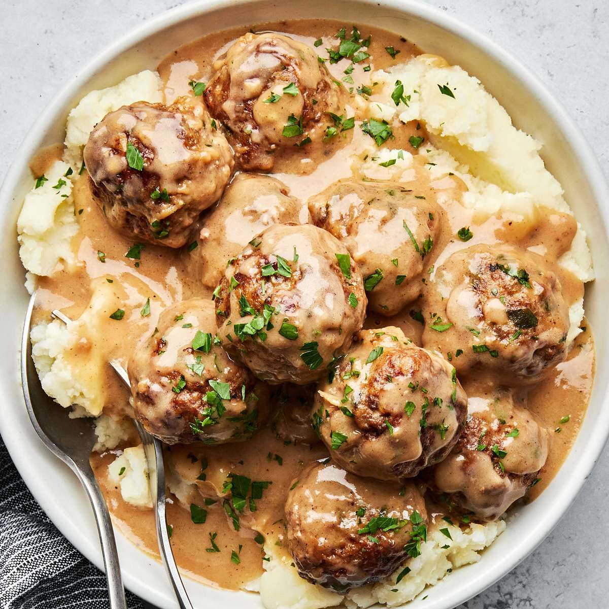

Swedish Meatballs (Svenska Kottbullar)
These Swedish meatballs are a Christmas tradition in our family. We frequently double the recipe and keep it warm in a slow cooker.
Worth the effort, and the meatballs are even better the next day!
Reserve brown gravy and add sour cream to it the day you serve the leftovers.

Prep Time:25 mins
Cook Time:1 hr
Additional Time:10 mins
Total Time:1 hr 35 mins
Servings:6
Ingredients
- 2 slices day-old white bread, crumbled
- ½ cup heavy cream
- 1 teaspoon butter
- 1 small onion, minced
- ⅔ pound ground beef
- ⅓ pound finely ground pork
- 1 large egg
- 1 tablespoon brown sugar (Optional)
- 1 teaspoon salt
- ¼ teaspoon ground black pepper
- ¼ teaspoon ground nutmeg
- ¼ teaspoon ground allspice
- ⅛ teaspoon ground ginger (Optional)
- 1 tablespoon butter
- ¼ cup chicken broth
- 3 tablespoons all-purpose flour, or as needed
- 2 cups beef broth, or as needed
- ½ (8 ounce) container sour cream
Directions
Step 1
Preheat the oven to 350 degrees F (175 degrees C).Step 2
Place bread crumbs into a small bowl; mix in cream. Allow to stand until crumbs absorb cream, about 10 minutes.Step 3
Meanwhile, melt 1 teaspoon butter in a skillet over medium heat; cook and stir onion until light brown, about 10 minutes. Transfer onion to a mixing bowl.Step 4
Mix ground beef, ground pork, egg, brown sugar, salt, black pepper, nutmeg, allspice, and ginger with onion in the mixing bowl.
Lightly mix in bread crumbs and cream.Step 5
Melt 1 tablespoon butter in a large skillet over medium heat.
Pinch off about 1 ½ tablespoons meat mixture per meatball; form into balls.
Place meatballs into the skillet and cook, turning often, until browned, about 5 minutes. Insides of meatballs will still be pink.Step 6
Place browned meatballs into a baking dish, pour in chicken broth, and cover with foil.Step 7
Bake in the preheated oven until meatballs are tender, about 40 minutes. Remove meatballs to a serving dish.Step 8
Pour pan drippings into a saucepan over medium heat. Whisk flour into drippings until smooth.Step 9
Gradually whisk in enough beef broth to total about 2 ½ cups liquid.Step 10
Bring gravy to a simmer, whisking constantly, until thickened, about 5 minutes.Step 11
Just before serving, whisk in sour cream. Season with salt and black pepper. Serve gravy with meatballs.
Nutrition Facts
pre serving: Calories 309; Total Fat 21g; Saturated Fat 11g; Cholesterol 108mg; Sodium 794mg; Total Carbohydrate 12g; Dietary Fiber 1g; Total Sugars 3g;
Protein 17g; Vitamin C 1mg; Calcium 65mg; Iron 2mg; Potassium 290mg.
Home